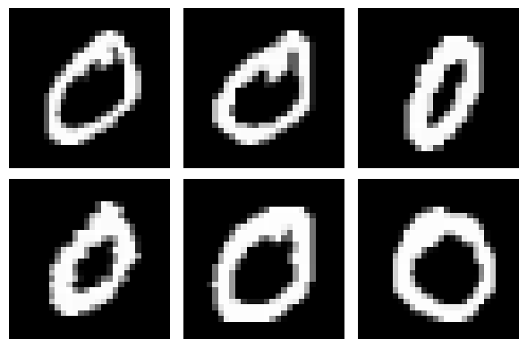
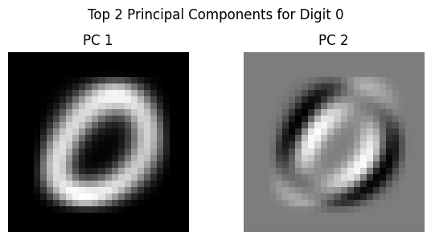
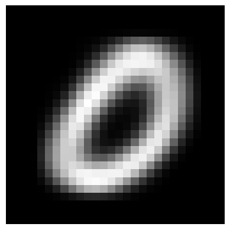
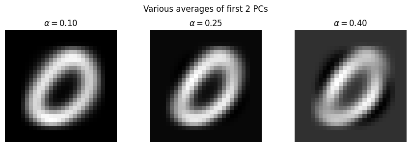

Digit Classifier (simple computer vision)
In progressWho is the intended audience? While SVD is a more advanced linear algebra topic, I write this for a general audience and will try to keep the math light and intuitive. Feel free to email me (or come to office hours if you're a student) if you want to talk through the math or code in more detail.
The MNIST data set consists of 70,000 images of handwritten digits.
Each image is a 28x28 grid of pixels (black and white intensities).
Here are some sample images from the training set:

SVD Baseline To begin, we want get a baseline of how well Singular Value Decomposition (SVD) can classify the digits. (In the stats/comp sci world, SVD is also called PCA - Principal Component Analysis.) To do this we need to "vectorize" and sort the training images by digit. For example, there are 5,923 training images of the digit "0", and we convert each \(28\times 28=784\) pixel image to a 784-length vector to make a 5923x784 matrix where each row is a vectorized "0" image. We shall call this matrix \(A_0\) since it is the data for the digit "0". We can do the same for each digit, giving us 10 matrices \(A_0, A_1, \ldots, A_9\).
The two facts we want to exploit are:
- Images have a lot of unnecessary pixels
- The images of the same digit are similar
For example, the first 6 images of "0" in \(A_0\) are:

We can see lots of similarity across the "0" images. Many pixels are always black and the relevant information is centred in the middle of the image, just to name a few observations. Exploiting these facts is the key to SVD's ability to classify the digits.
A little bit of Intuition/Explanation:
A matrix can be though of as a function from \(n\)-dimensional space to \(m\)-dimensional space.
Think of casting a shadow from a 3D object to the 2D ground.
Or, maybe a more apt question in this case is:
Given a 2D shadow, what is the most likely 3D object that created it?
In any case, we have a 784-dimensional space of pixel values,
and we want to find the most likely digit that could have created a given image.
The math can get a little deep here but the take away is that
SVD is a way to find the "most important" features of a vector.
The first "singular vector" (or "principal component") of the matrix \(A_0\)
is the single vector that "best represents" all the "0" images.
Each additional vector captures the next most important feature of the data, and so on.
Let's see this with an example.
Here are the first 2 Principal Components of the "0" matrix \(A_0\):

The first PC captures the overall shape of the "0" digit.
It's smoother than the first 6 images in the training set because it's sort of an average. It's also more round. Do you notice how many of even the first six 0 digits in the training set seem to slant along the southwest to northeast diagonal.
The second PC captures the typical SW to NE slanting .
We can demonstrate this by taking a weighted average of the first two PCs: \[\text{NewImage} = (1-\alpha) \cdot \text{PC1} + \alpha \cdot \text{PC2}, \quad 0 \le \alpha\le 1\] where \(\alpha\) controls how much of the second PC's slanting feature we add to the first PC. Here is an example using \(\alpha=0.2\):

To get a sense of how adding PC2 does this, scan your eyes from the NW corner of PC2 to the SE corner and notice the extreme black/white variation along that diagonal. The black pixels in that variation subtract (or turn off) pixels. So, when we add PC2 to PC1, we are turning down/off pixels in the black regions and brightening pixels where PC2 is bright.
We can demonstrate this for various \(\alpha\) values:
